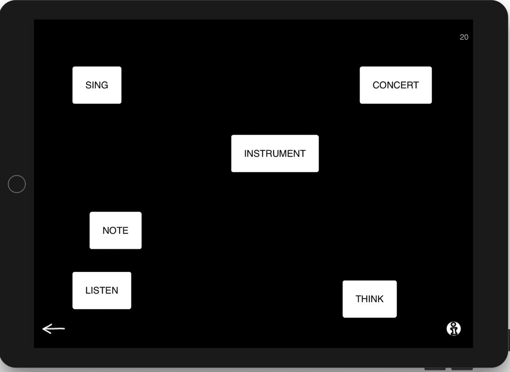
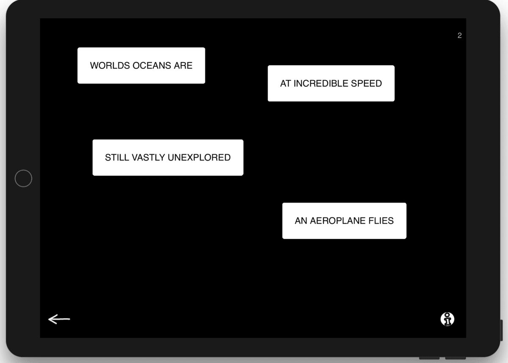
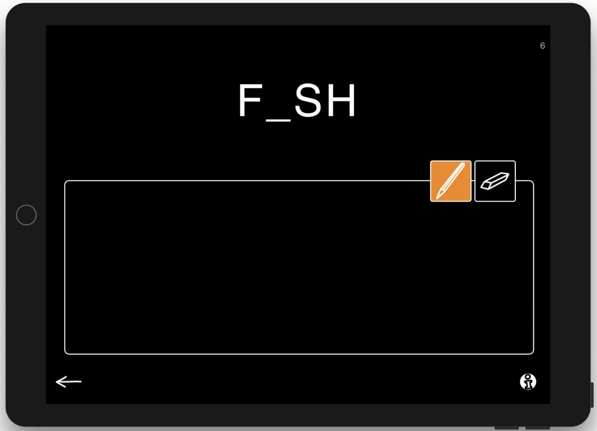
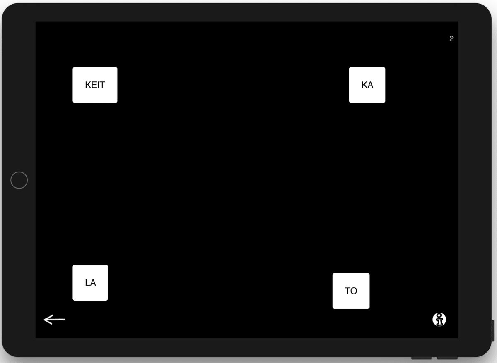

We are proud to release our latest update!
You can now download the latest version of Sanapsis from AppStore update (Finnish, version 2.4 and English, version 2.7) with new material in many of the familiar exercises (we think of them as Oldies but Goodies) and also brand new exercises. As always, all new material is free - no In-App purchases, ever!
This time, most of the new things will be in our Reading-category with some extra sweet treats around the app. Below you will find a list of the things we hope will assist you in planning your therapy sessions this fall and beyond.
Oldies but goodies, improvements:
Word and Picture now has 260 tasks
Sentence and Picture has 40 new tasks, making it a total of 104
Organize a story / Järjestä tarina has changed its name to Organize instructions / Järjestä toimintaohje to better reflect the nature of the task. It also gained 7 new tasks!
Read a story got a few more stories (4 to be exact) making it 20 in total
In addition to these we have something brand new to show you: 3 brand new exercises.
What does not belong (total of 64 tasks in exercise)
Sound familiar? Yes, I am sure all of you have used this exercise many times before. In What does not belong you see a selection of words on screen. Ask your patient to look for the one that does not belong to the group. This new exercise has three different levels. Level 1 has four nouns and one of these does not belong in the same category as others. Level 2 adds two words the selection. On level 3 things get a little bit more interesting. Here you may find a noun mixed in with verbs or a selection where one of the words that has no connection to a library (an example of level 3 in the picture). Tasks on level 3 can be a challenge and thus provide material for our higher performing patients. As usual, the info text in the app provides you with ideas on how to use this exercise in many ways with different patients in therapy.

What does not belong? Level 3. One answer could be: The word THINK does not belong as it is not directly associated with music. Can you think of other solutions?
Connect sentences (with 90 tasks in total)
This new exercise is a meaningful reading task at sentence level. On screen you see sentences cut in half. Ask your patient to read the parts of sentences on screen and arrange them to make coherent sentences. On level 1 you find two complete sentences mixed up, on level 2 three. Level 3 provides more challenge with four sentences. Working on multiple sentences at the same time makes your patient challenge their working memory, attentional control, cognitive inhibition, and cognitive flexibility - all the executive functions we need to be able to communicate effectively using any domains of language. And all this while exercising those reading skills!

Connect sentences. Level 1.
Solution: Worlds oceans are still vastly unexplored. An aeroplane flies at incredible speed.
Fill in letters by hand (with 224 different words)
Remember the exercise Copy words by hand? The one where you can use a finger or a stylus pen to copy words they see on screen? Well, it now has a sibling! In the new exercise Fill in letters by hand the words have lost some of their letters.. But not to worry, just ask your patient to fill in the missing letters while writing the word. Some words are easy, some are more difficult (multiple let_e_s missing). You can take advantage of this by experimenting with different channels for clues (auditory and visual) and help your patient to find the ones that are most helpful to them. You can also choose a category for the words. By choosing a category you have some context for word-finding (priming). If you leave the selection blank you will be given a random word and the difficulty for the task increases.

Fill in letters by hand. You can guess this one, right?
And a special treat for our Finnish users only, just because the language is awesome:
Järjestä tavut (180 tehtävää)
Eräs ehdottomista lempimateriaaleistani terapiassa on tavukortit. Tyypillisesti luomme näitä lennossa kynää ja paperia käyttäen, hetkessä asiakkaan tarpeita vastaamaan. Nyt päätimme vihdoin tuoda tavut Sanapsikseen, toivottavasti olemme osanneet valita mukaan sanat ja sanaparit joista on iloa käyttäjille (ja paperikori ei jatkossa pursua pieniä lappuja enää ihan samalla tavalla kuin aiemmin..)!
Tehtäväinstruktio sovelluksessa kuuluu seuraavasti:
Ruudulla näet vaihtelevan määrän tavuja. Yhdistettynä tavut muodostavat sanoja, joita kuntoutuja voi rakentaa tavuja liikuttelemalla. Tasolla 1 ruudulla on yksi kaksi- tai kolmitavuinen sana, esim. SA-NA tai SA-RA-NA. Tasolla 2 ruudulta löytyy 1 nelitavuinen yhdyssana, esim. VE-SI-SA-DE, josta voi muodostaa yhden tai kaksi sanaa. Tasolla 3 tavut muodostavat kaksi 2-3 tavuista sanaa esim. KO-RI ja MU-KA-VA. Tavujen määrän lisääntyessä ja rakenteen muuttuessa tehtävä vaikeutuu niin visuaalisesti kuin kognitiivisestikin. Sopivien sanojen rakentaminen tapahtuu kuntoutujan ja terapeutin yhteistyönä. Sanapsis ei anna palautetetta suorituksesta, sillä kaikki suomenkieliset sanat (joiden merkityksen kuntoutuja osaa kuvata) tietenkin kelpaavat!
Tavutehtävää voit hyödyntää perustehtävänä sanatason merkitykselliseen lukemiseen, jossa kuntoutujan tulee itse määritellä milloin tavuyhdistelmä muodostaa merkityksellisen sanan. Halutessasi voit myös itse terapeuttina järjestää osan tavuista sanoiksi, osan epäsanoiksi ja pyytää kuntoutujaa arvioimaan mikä sanoista on oikein ja mikä väärin. Tässä versiossa harjoitat sekä lukemista, semanttista päättelyä että kriittistä työskentelyotetta. Puhumattakaan yhteistyöstä ja erilaisista kommunikointirooleista roolien vaihtuessa! Yksinkertaisia tavurakenteita voit hyödyntää myös dysartria- tai apraksiaharjoitteissa, joko toisto tai ääneenlukuharjoitteina. Usein on myös tarkoituksenmukaista yhdistää monia tavoitteita yhdellä materiaalilla toteutettuun tehtävään, ja tavusarjoillahan puheterapeutit keksivät vaikka mitä!
MItä tapoja ja ideoita sinulla on tavukorttien hyödyntämiseen?

Järjestä tavut, taso 2.
Ratkaisu voi olla KALAKEITTO tai KALA ja KEITTO
So, there you go. Now, off to work on the next one! Hope it won't be long till I see you again with a new update. In the meanwhile, please let us know how we are doing. We love to hear from our users!